🏆 Welcome to Lesson 10
Chart Patterns
Chart patterns are identifiable, repeating price structures that help traders predict future market movements. They are typically categorized as either reversal patterns, which signal a trend change, or continuation patterns, which suggest the existing trend will resume.
📘 Lesson Information
- ⏱ Estimated Time: 35–45 Minutes
- 📊 Difficulty: Beginner
- 📝 Total Steps: 19
- 🎯 Quiz: 15 Questions
Welcome to Lesson 10! Chart Patterns are one of the most powerful tools in technical analysis. They help traders understand market psychology, recognize potential reversals or continuations, and identify high-probability trading opportunities. In this lesson, you'll learn how to recognize the most common chart patterns and use them effectively in your trading.
🎯 Learning Objectives
- ✅ What chart patterns are
- ✅ How to draw chart patterns correctly
- ✅ Reversal and continuation patterns
- ✅ Double Top & Double Bottom
- ✅ Head & Shoulders Pattern
- ✅ Triangle, Wedge & Rectangle Patterns
- ✅ How to trade chart patterns professionally
- ✅ Common mistakes to avoid
💡 Strativo Tip
Don't try to memorize every pattern in one day. Focus on understanding why a pattern forms. Once you understand the psychology behind buyers and sellers, identifying chart patterns becomes much easier.
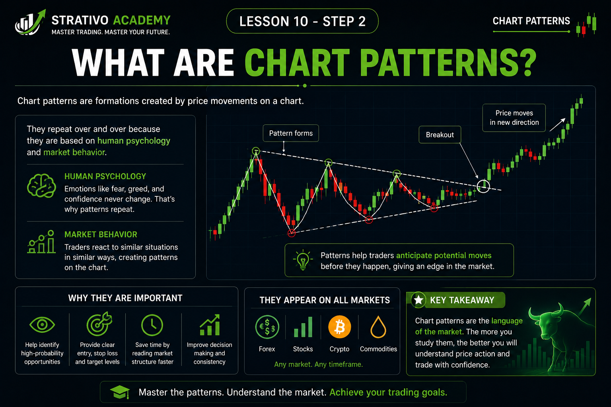
📖 What Are Chart Patterns?
Chart patterns are shapes that naturally form on a price chart as the market moves. These shapes are created by the continuous battle between buyers and sellers. By studying these patterns, traders can better understand what the market is trying to communicate and make more informed trading decisions.
Think of chart patterns as a visual representation of market psychology. Every candle on a chart represents buying and selling activity. When candles combine over time, they often create recognizable formations that repeat because human emotions—such as fear, greed, confidence, and uncertainty—repeat in every market.
🧠 Why Do Chart Patterns Form?
Financial markets move because buyers and sellers constantly compete to control price. Sometimes buyers are stronger and price rises. Sometimes sellers dominate and price falls. There are also times when neither side is in control, causing price to move sideways before eventually breaking out.
These repeated battles create patterns that traders have observed for many years. While no pattern guarantees a future move, understanding them helps traders identify high-probability opportunities.
📊 Why Are Chart Patterns Important?
- ✅ Help identify potential trend reversals.
- ✅ Help identify trend continuation opportunities.
- ✅ Improve entry and exit timing.
- ✅ Help locate logical Stop Loss and Take Profit levels.
- ✅ Improve overall market analysis.
- ✅ Increase trading confidence by following structured setups.
⚠️ Important Reality
Many beginners believe chart patterns always work. This is not true. Chart patterns are probability-based tools, not guarantees. A pattern can fail if market conditions change or if traders enter before proper confirmation.
Professional traders never rely on a chart pattern alone. They combine chart patterns with trend analysis, support and resistance, volume, market structure, and proper risk management before taking a trade.
💡 Strativo Tip
Chart patterns do not predict the future. They help traders read market psychology and prepare for possible price movements. Always wait for confirmation before entering a trade.
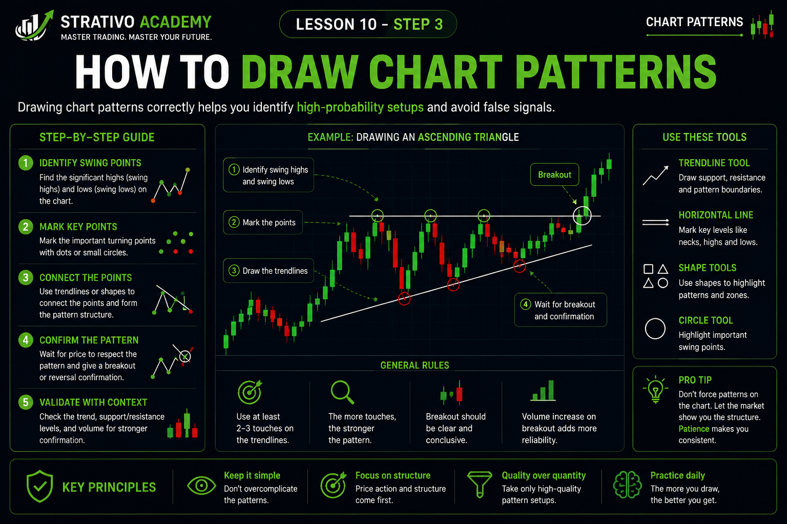
✏️ How to Draw Chart Patterns
Before you can successfully trade chart patterns, you must first learn how to draw them correctly. Many beginners lose money because they force patterns onto random price movements instead of waiting for a clear and valid formation.
Professional traders never guess where a pattern exists. They patiently wait until price creates a recognizable structure. If the pattern is unclear, they simply ignore it and wait for a better opportunity.
📌 Step 1: Identify the Current Trend
Every chart pattern begins with understanding the current market direction. Ask yourself these questions:
- 📈 Is the market making Higher Highs and Higher Lows? (Uptrend)
- 📉 Is the market making Lower Highs and Lower Lows? (Downtrend)
- ➡️ Is the market moving sideways? (Range)
Knowing the trend helps you understand whether the pattern is more likely to become a continuation pattern or a reversal pattern.
📌 Step 2: Connect Important Swing Points
Chart patterns are built using swing highs and swing lows. These are the points where price clearly changes direction.
- ✅ Connect swing highs to create resistance trendlines.
- ✅ Connect swing lows to create support trendlines.
- ✅ Use at least two touches before considering a valid trendline.
- ✅ Three or more touches make the pattern stronger.
📌 Step 3: Let the Pattern Develop Naturally
One of the biggest mistakes beginners make is drawing a pattern before it is complete. A professional trader allows price to naturally form the structure.
The more complete and cleaner the pattern looks, the higher the probability that other traders are also watching the same setup.
📌 Step 4: Wait for Confirmation
Never enter a trade simply because a pattern appears on the chart. Wait for confirmation such as:
- ✔️ A breakout above resistance or below support.
- ✔️ A strong closing candle outside the pattern.
- ✔️ Increased trading volume (if available).
- ✔️ A retest of the broken level for extra confirmation.
⚠️ Common Drawing Mistakes
- ❌ Forcing trendlines to fit price.
- ❌ Connecting candle wicks randomly.
- ❌ Ignoring the overall trend.
- ❌ Trading before confirmation.
- ❌ Assuming every zigzag movement is a chart pattern.
💡 Strativo Tip
Keep your chart clean. Draw only the most obvious swing highs, swing lows, support, and resistance levels. If you have to force a pattern to make it fit, it is probably not a valid chart pattern. The best setups are usually the simplest and easiest to recognize.
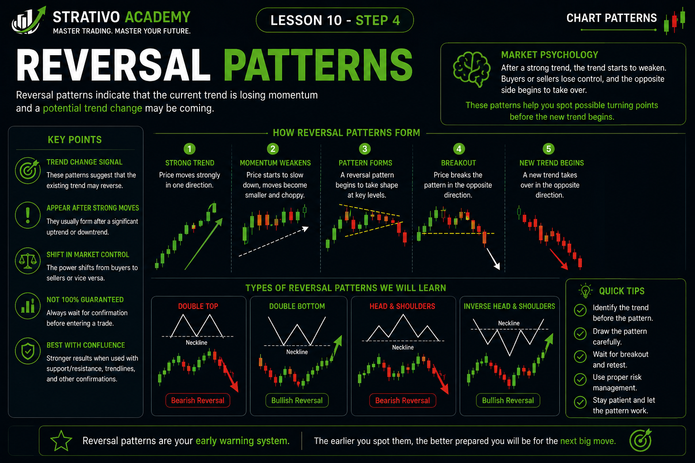
🔄 Reversal Chart Patterns
A reversal pattern is a chart formation that signals the current trend may be coming to an end and a new trend could begin. These patterns appear after a strong upward or downward movement and indicate that the balance between buyers and sellers is changing.
Imagine a car driving at high speed. Before it changes direction, it usually slows down first. Financial markets behave in a similar way. Before price changes direction, buying or selling pressure often weakens, allowing the opposite side to take control. This transition creates reversal chart patterns.
📈 Bullish Reversal Patterns
Bullish reversal patterns usually appear after a downtrend. They suggest that sellers are losing strength and buyers are beginning to take control of the market.
Common bullish reversal patterns include:
- ✅ Double Bottom
- ✅ Inverse Head & Shoulders
- ✅ Falling Wedge (Bullish Breakout)
📉 Bearish Reversal Patterns
Bearish reversal patterns usually appear after an uptrend. They indicate that buyers are becoming weaker while sellers are gaining control, increasing the probability of a downward move.
Common bearish reversal patterns include:
- ✅ Double Top
- ✅ Head & Shoulders
- ✅ Rising Wedge (Bearish Breakdown)
🧠 Market Psychology
Every reversal pattern tells a story about the struggle between buyers and sellers.
- 📈 During an uptrend, buyers push price higher.
- ⚖️ Eventually buyers become exhausted and momentum slows.
- 📉 Sellers begin entering the market.
- 🔄 Control gradually shifts from buyers to sellers.
- 🚀 Price reverses after confirmation.
The opposite process happens during a bullish reversal, where sellers lose momentum and buyers begin taking control.
⚠️ Don't Assume Every Pullback Is a Reversal
One of the biggest beginner mistakes is confusing a temporary pullback with a complete trend reversal. Markets often retrace before continuing in the original direction.
Always wait for confirmation such as a breakout, strong candle close, or change in market structure before assuming the trend has reversed.
💡 Strativo Tip
Reversal patterns signal a possible change in trend—not a guaranteed one. Professional traders always wait for confirmation before entering a trade and never rely on the pattern alone.
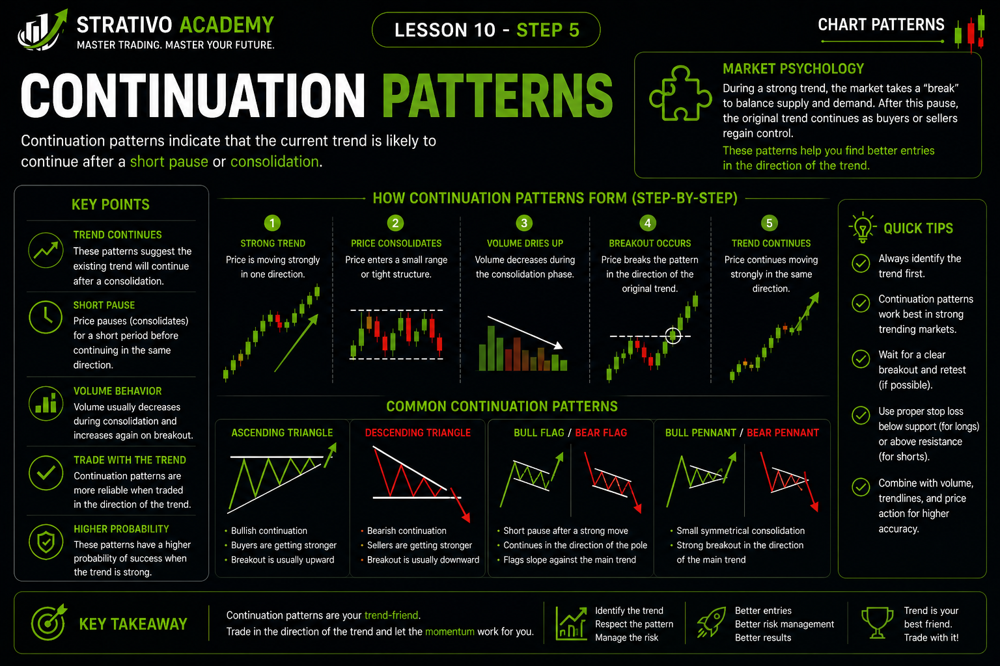
➡️ Continuation Chart Patterns
Continuation patterns are chart formations that suggest the current trend is likely to continue after a short pause or period of consolidation. Instead of changing direction, the market takes a break before moving further in the same direction.
Think of a runner in a marathon. The runner may slow down for a short time to regain energy but then continues running toward the finish line. Markets behave in a similar way. During a strong trend, price often pauses before continuing its movement.
📈 Why Do Continuation Patterns Form?
No market moves in one direction forever. Even during a strong trend, traders take profits while new traders wait for better entry opportunities. This temporary balance between buyers and sellers creates continuation patterns.
Once enough buying or selling pressure returns, price usually breaks out of the pattern and resumes the original trend.
📊 Common Continuation Patterns
- ✅ Ascending Triangle
- ✅ Descending Triangle
- ✅ Symmetrical Triangle
- ✅ Rectangle Pattern
- ✅ Bull Flag
- ✅ Bear Flag
In this lesson, we will focus on the most reliable continuation patterns that beginners should learn first.
🧠 Market Psychology
Continuation patterns show that the dominant side of the market still has control, even though price temporarily slows down.
- 📈 Buyers or sellers create a strong trend.
- ⏸️ Price pauses as traders take profits.
- ⚖️ Buyers and sellers reach temporary balance.
- 📊 The chart forms a recognizable pattern.
- 🚀 One side regains control and price breaks out.
- 📈 The original trend continues.
⚠️ Don't Trade Before the Breakout
Many beginners enter trades while the price is still moving inside the pattern. This is risky because the market has not yet decided which direction it will move.
Professional traders usually wait for a clear breakout and a strong candle close outside the pattern before considering an entry.
📌 Reversal vs Continuation
| Reversal Pattern | Continuation Pattern |
|---|---|
| Changes the current trend. | Continues the existing trend. |
| Appears near the end of a trend. | Appears during an existing trend. |
| Signals a possible trend reversal. | Signals a temporary pause before continuation. |
| Requires confirmation. | Also requires confirmation. |
💡 Strativo Tip
Continuation patterns do not mean the trend has ended. They simply represent a temporary pause in the market. Always wait for a confirmed breakout before entering a trade, and combine the pattern with support, resistance, and overall market trend for better decision-making.
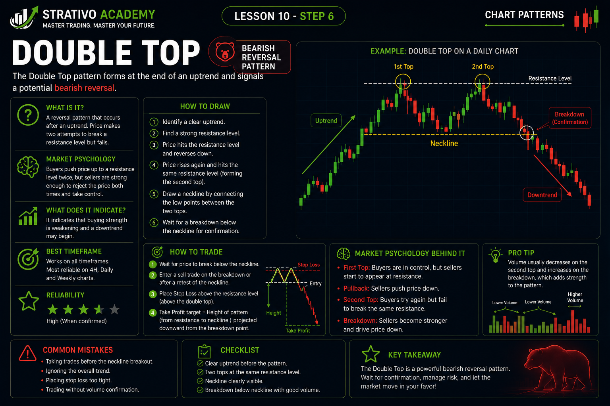
📉 Double Top Pattern
The Double Top is one of the most reliable bearish reversal chart patterns. It usually appears after a strong uptrend and signals that buyers are losing strength while sellers are beginning to take control. Because it is easy to identify and widely used by traders, it is considered one of the first chart patterns every beginner should learn.
The pattern gets its name because price reaches approximately the same high level twice, creating two peaks that resemble the letter "M". When the second attempt to move higher fails, it shows that buyers are no longer strong enough to continue the uptrend.
🔍 How to Identify a Double Top
- ✅ A clear uptrend must exist before the pattern forms.
- ✅ Price creates the first peak and then pulls back.
- ✅ Buyers push price up again to nearly the same level.
- ✅ The second peak fails to break significantly above the first peak.
- ✅ Price falls below the neckline, confirming the pattern.
🧠 Market Psychology
During the first rally, buyers are in complete control and push price to a new high. After reaching resistance, some traders take profits, causing a temporary pullback.
Buyers then try to continue the uptrend by pushing price back to the previous high. However, they fail to create a strong new high. This failure shows that buying momentum is weakening.
As sellers notice the failed breakout, they begin entering the market. When price breaks below the neckline, many buyers exit their positions while more sellers enter, increasing bearish momentum.
📏 Important Parts of the Pattern
- 📈 Existing Uptrend
- ⛰️ First Peak
- 📉 Pullback
- ⛰️ Second Peak
- ➖ Neckline (Support Level)
- 📉 Breakdown Below Neckline
📊 How to Trade a Double Top
- Wait for a complete Double Top to form.
- Draw the neckline by connecting the lowest point between the two peaks.
- Wait for a strong candle to close below the neckline.
- Some traders wait for a retest of the neckline before entering.
- Place Stop Loss above the second peak.
- Take Profit can be placed near the next support level or by measuring the height of the pattern.
⚠️ Common Beginner Mistakes
- ❌ Trading before the neckline breaks.
- ❌ Assuming every "M" shape is a Double Top.
- ❌ Ignoring the previous uptrend.
- ❌ Entering without confirmation.
- ❌ Forgetting to use proper risk management.
💡 Strativo Tip
The strongest Double Top patterns usually form near major resistance zones after a long uptrend. A strong bearish breakout below the neckline, followed by a successful retest, often provides a higher-probability trading opportunity. Remember, confirmation is more important than entering early.
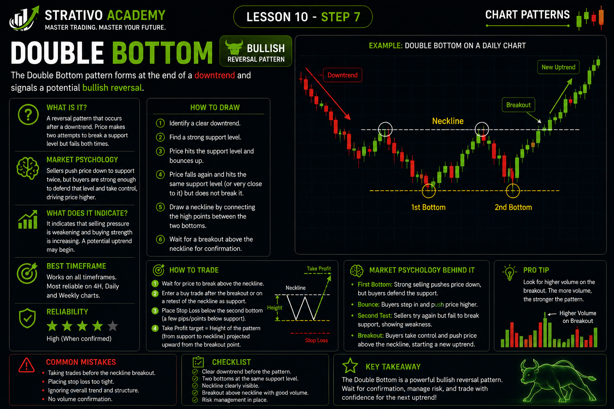
📈 Double Bottom Pattern
The Double Bottom is one of the most popular bullish reversal chart patterns. It usually forms after a prolonged downtrend and signals that sellers are losing momentum while buyers are beginning to take control. Because of its reliability and easy identification, it is considered one of the most important patterns every trader should understand.
The pattern gets its name because price reaches approximately the same low level twice, creating two valleys that resemble the letter "W". When sellers fail to push the market below the first low, it shows that selling pressure is weakening and buyers may soon reverse the trend.
🔍 How to Identify a Double Bottom
- ✅ A clear downtrend must exist before the pattern forms.
- ✅ Price creates the first bottom and then rebounds upward.
- ✅ Sellers push price down again toward the previous low.
- ✅ The second bottom forms near the same price level as the first.
- ✅ Price breaks above the neckline, confirming the pattern.
🧠 Market Psychology
During a downtrend, sellers control the market and continue pushing prices lower. Eventually, buyers begin to see value and enter the market, causing a temporary bounce.
Sellers attempt one more time to continue the downtrend, but they fail to create a significantly lower low. This failure shows that selling pressure is fading while buyers are becoming stronger.
As more traders recognize the failed breakdown, buying pressure increases. When price breaks above the neckline, many buyers enter the market while short sellers begin closing their positions, helping price move even higher.
📏 Important Parts of the Pattern
- 📉 Existing Downtrend
- 🔻 First Bottom
- 📈 Temporary Rally
- 🔻 Second Bottom
- ➖ Neckline (Resistance Level)
- 🚀 Breakout Above Neckline
📊 How to Trade a Double Bottom
- Wait for both bottoms to form completely.
- Draw the neckline by connecting the highest point between the two bottoms.
- Wait for a strong candle to close above the neckline.
- Many professional traders wait for a retest of the neckline before entering.
- Place the Stop Loss below the second bottom.
- Take Profit can be placed near the next resistance level or by measuring the height of the pattern.
⚠️ Common Beginner Mistakes
- ❌ Trading before the neckline breakout.
- ❌ Confusing a temporary bounce with a Double Bottom.
- ❌ Ignoring the previous downtrend.
- ❌ Entering without waiting for confirmation.
- ❌ Forgetting proper risk management.
💡 Strativo Tip
The strongest Double Bottom patterns usually develop near major support levels after an extended downtrend. A decisive breakout above the neckline, followed by a successful retest, often provides a higher-probability buying opportunity. Always combine the pattern with trend analysis, support and resistance, and sound risk management before entering a trade.
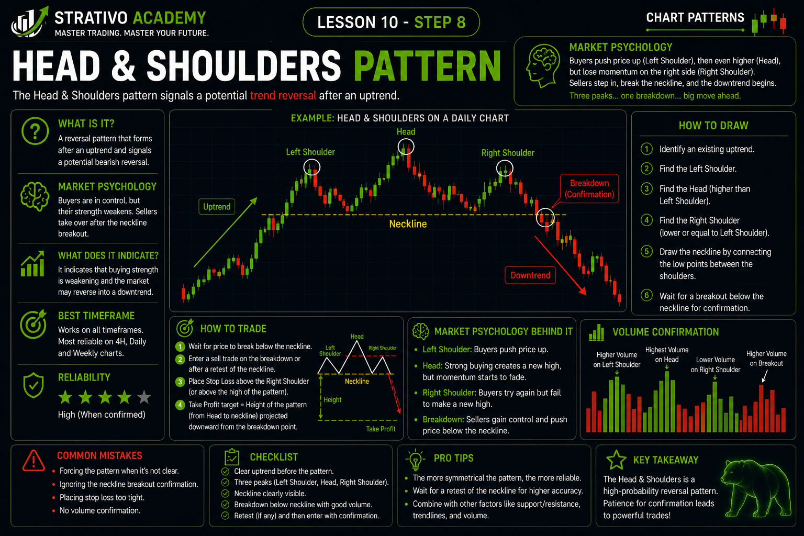
👤 Head & Shoulders Pattern
The Head & Shoulders pattern is one of the strongest and most trusted bearish reversal patterns in technical analysis. It usually forms after a strong uptrend and indicates that buyers are gradually losing control while sellers are becoming stronger. Many professional traders watch this pattern because it often appears before a significant downward price movement.
The pattern is named after its appearance. It consists of three peaks: the first peak is called the Left Shoulder, the middle and highest peak is called the Head, and the third peak is called the Right Shoulder. A support line drawn beneath these peaks is known as the Neckline. When price breaks below the neckline, the pattern is confirmed.
🔍 Structure of the Pattern
- ✅ A strong uptrend exists before the pattern forms.
- ✅ Price creates the Left Shoulder and then pulls back.
- ✅ Buyers push price to a higher high, creating the Head.
- ✅ Price falls again to the neckline.
- ✅ Buyers attempt another rally but fail to reach the Head, creating the Right Shoulder.
- ✅ Price breaks below the neckline, confirming the bearish reversal.
🧠 Market Psychology
During the uptrend, buyers confidently push prices higher. The Left Shoulder forms as buyers take a short break after reaching a new high.
Buyers then return with enough strength to create an even higher peak, forming the Head. However, after this move, sellers begin to increase their pressure, causing another decline toward the neckline.
Buyers make one final attempt to continue the uptrend, but this time they fail to create a new high. Instead, the Right Shoulder forms below the Head, showing that buying strength is fading. When sellers finally push price below the neckline, market control shifts from buyers to sellers.
📏 Important Parts of the Pattern
- 📈 Existing Uptrend
- 👈 Left Shoulder
- 👤 Head (Highest Peak)
- 👉 Right Shoulder
- ➖ Neckline (Support Level)
- 📉 Breakout Below Neckline
📊 How to Trade the Head & Shoulders Pattern
- Wait for the complete pattern to form.
- Draw the neckline by connecting the swing lows between the shoulders and the head.
- Wait for a strong candle to close below the neckline.
- Many traders wait for a retest of the neckline before entering a sell trade.
- Place the Stop Loss above the Right Shoulder.
- Take Profit can be placed near the next support level or by measuring the distance from the Head to the Neckline.
📈 Inverse Head & Shoulders
There is also a bullish version called the Inverse Head & Shoulders. It forms after a downtrend and signals a possible bullish reversal. Instead of three peaks, it consists of three valleys. Once price breaks above the neckline, buyers often gain control and the market may begin moving upward.
⚠️ Common Beginner Mistakes
- ❌ Trading before the neckline breaks.
- ❌ Ignoring the previous uptrend.
- ❌ Assuming every three-peak formation is a valid Head & Shoulders pattern.
- ❌ Entering without confirmation.
- ❌ Ignoring risk management.
💡 Strativo Tip
The best Head & Shoulders patterns form after a strong uptrend and near important resistance levels. A decisive breakout below the neckline, especially with strong bearish momentum, provides a higher-probability trading opportunity. Always combine this pattern with trend analysis, support and resistance, and proper risk management for the best results.
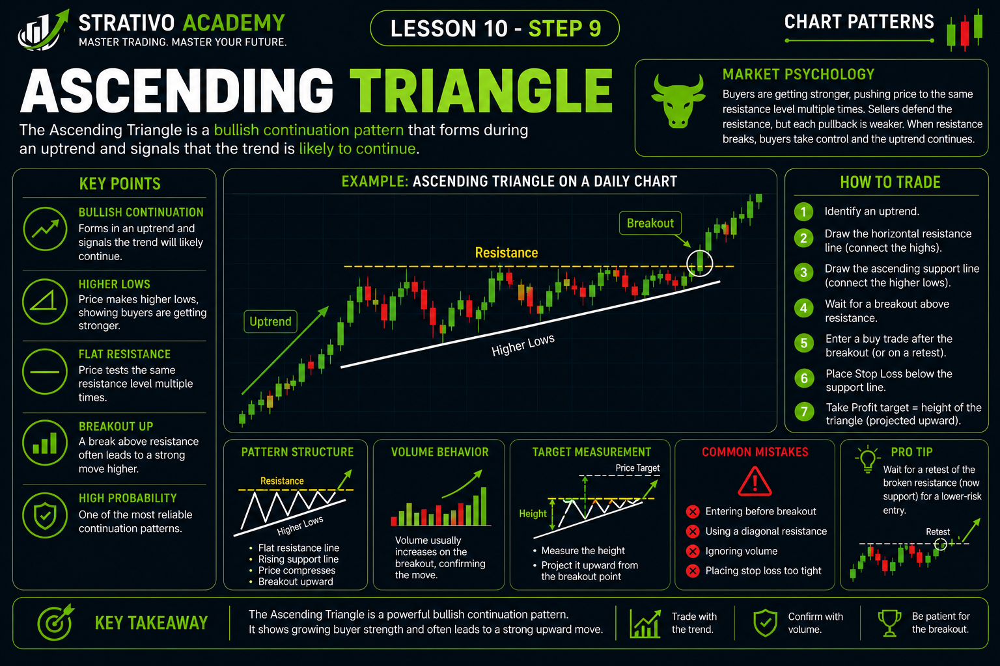
📈 Ascending Triangle Pattern
The Ascending Triangle is one of the strongest bullish continuation chart patterns. It usually forms during an uptrend and suggests that buyers are becoming increasingly stronger while sellers are struggling to stop the price from moving higher. Once the resistance level is broken, the market often continues its upward trend with strong momentum.
The pattern is called an Ascending Triangle because it is formed by a horizontal resistance line at the top and a rising support trendline below. As the support line moves upward, buyers keep entering the market at higher prices, showing increasing confidence.
🔍 How to Identify an Ascending Triangle
- ✅ A clear uptrend should exist before the pattern forms.
- ✅ Price repeatedly touches a horizontal resistance level.
- ✅ Each pullback creates a Higher Low.
- ✅ Draw a horizontal line across the resistance.
- ✅ Draw an upward-sloping trendline connecting the Higher Lows.
- ✅ Wait for a breakout above the resistance line.
🧠 Market Psychology
Sellers initially defend a resistance level and prevent price from moving higher. However, buyers continue stepping into the market after every small pullback, creating a series of Higher Lows.
This shows that buyers are becoming more aggressive. They are no longer waiting for deep pullbacks before buying. Instead, they are willing to buy at increasingly higher prices.
Eventually, the buying pressure becomes too strong for sellers to defend the resistance level. When price breaks above resistance, many new buyers enter the market while sellers exit their positions, causing the trend to continue upward.
📏 Important Parts of the Pattern
- 📈 Existing Uptrend
- ➖ Horizontal Resistance
- 📈 Rising Support Trendline
- 📍 Higher Lows
- 🚀 Bullish Breakout
📊 How to Trade an Ascending Triangle
- Wait for the Ascending Triangle to fully develop.
- Draw the resistance and rising support lines.
- Wait for a strong bullish candle to close above resistance.
- Many professional traders wait for a retest of the breakout level before buying.
- Place the Stop Loss below the most recent Higher Low or below the support trendline.
- Take Profit can be placed at the next resistance level or by measuring the height of the triangle and projecting it upward.
⚠️ Common Beginner Mistakes
- ❌ Trading before the breakout occurs.
- ❌ Drawing the resistance line at different price levels.
- ❌ Ignoring the Higher Lows.
- ❌ Entering without waiting for a candle close above resistance.
- ❌ Forgetting to use Stop Loss.
💡 Strativo Tip
The strongest Ascending Triangle patterns form during a healthy uptrend with multiple touches of both the resistance line and the rising support trendline. A breakout supported by strong momentum provides a higher-probability buying opportunity. Always combine the pattern with trend analysis, support and resistance, and proper risk management before entering a trade.
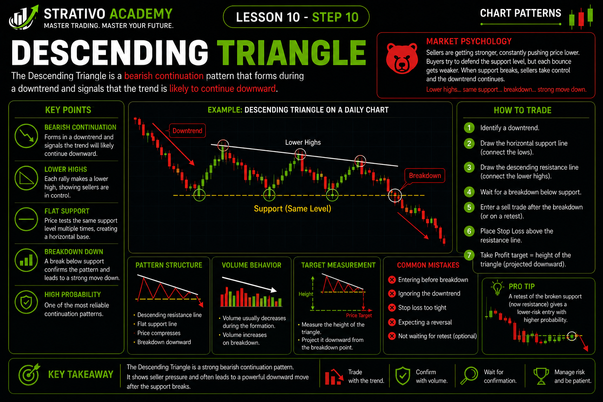
📉 Descending Triangle Pattern
The Descending Triangle is one of the strongest bearish continuation chart patterns. It usually forms during a downtrend and indicates that sellers are becoming increasingly aggressive while buyers are struggling to defend a support level. Once that support level breaks, the market often continues moving downward with strong momentum.
The pattern is called a Descending Triangle because it is formed by a horizontal support line at the bottom and a downward-sloping resistance trendline above. As the resistance line moves lower, sellers continue entering the market at lower prices, showing increasing selling pressure.
🔍 How to Identify a Descending Triangle
- ✅ A clear downtrend should exist before the pattern forms.
- ✅ Price repeatedly touches the same support level.
- ✅ Each rally creates a Lower High.
- ✅ Draw a horizontal support line across the lows.
- ✅ Draw a downward-sloping trendline connecting the Lower Highs.
- ✅ Wait for a bearish breakout below the support line.
🧠 Market Psychology
Buyers initially defend an important support level and stop the price from falling further. However, sellers continue entering the market after every small rally, creating a series of Lower Highs.
This shows that sellers are becoming more confident. Buyers are unable to push price back to previous highs, while sellers are willing to sell at increasingly lower prices.
Eventually, selling pressure becomes too strong for buyers to defend the support level. When price breaks below support, many sellers enter new positions while buyers close their trades, causing the downtrend to continue.
📏 Important Parts of the Pattern
- 📉 Existing Downtrend
- ➖ Horizontal Support
- 📉 Falling Resistance Trendline
- 📍 Lower Highs
- ⬇️ Bearish Breakout
📊 How to Trade a Descending Triangle
- Wait for the Descending Triangle to fully develop.
- Draw the horizontal support and falling resistance lines.
- Wait for a strong bearish candle to close below support.
- Many professional traders wait for a retest of the broken support before entering a sell trade.
- Place the Stop Loss above the most recent Lower High or above the resistance trendline.
- Take Profit can be placed at the next support level or by measuring the height of the triangle and projecting it downward.
⚠️ Common Beginner Mistakes
- ❌ Selling before the support breaks.
- ❌ Ignoring the Lower Highs.
- ❌ Drawing trendlines incorrectly.
- ❌ Entering without waiting for breakout confirmation.
- ❌ Trading without proper risk management.
💡 Strativo Tip
The strongest Descending Triangle patterns usually develop during a strong downtrend with several touches of both the support line and the falling resistance trendline. A decisive breakout below support, especially with strong bearish momentum, offers a higher-probability selling opportunity. Always combine this pattern with market structure, support and resistance, and sound risk management before placing a trade.
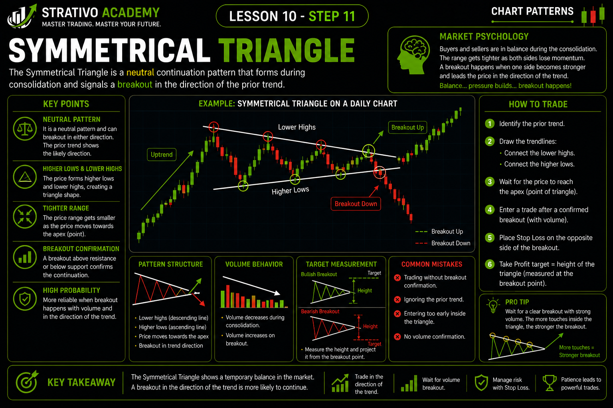
🔺 Symmetrical Triangle Pattern
The Symmetrical Triangle is one of the most common chart patterns in technical analysis. Unlike the Ascending Triangle and Descending Triangle, this pattern does not automatically indicate whether the market will move up or down. Instead, it represents a period of balance between buyers and sellers, where neither side has complete control.
As the pattern develops, price creates Lower Highs and Higher Lows. This causes the two trendlines to move closer together, forming a triangle shape. Eventually, the market reaches a point where one side gains control and price breaks out strongly in that direction.
🔍 How to Identify a Symmetrical Triangle
- ✅ Price forms a series of Lower Highs.
- ✅ Price also forms a series of Higher Lows.
- ✅ Draw a descending trendline across the highs.
- ✅ Draw an ascending trendline across the lows.
- ✅ The two trendlines converge toward each other.
- ✅ Wait for a confirmed breakout before entering a trade.
🧠 Market Psychology
During the formation of a Symmetrical Triangle, buyers are no longer able to push price to new highs, while sellers are also unable to create new lows. This creates a temporary balance between demand and supply.
As the trading range becomes smaller, pressure builds inside the pattern. Eventually, one side becomes stronger than the other, resulting in a powerful breakout. The breakout direction tells us who has gained control of the market.
📏 Important Parts of the Pattern
- 📉 Descending Resistance Trendline
- 📈 Ascending Support Trendline
- 📍 Lower Highs
- 📍 Higher Lows
- ⚡ Breakout Point
📊 How to Trade a Symmetrical Triangle
- Wait until the triangle is fully developed.
- Draw both converging trendlines accurately.
- Never guess the breakout direction.
- Wait for a strong candle to close outside the triangle.
- If the breakout is upward, look for buying opportunities.
- If the breakout is downward, look for selling opportunities.
- Many professional traders wait for a retest of the broken trendline before entering.
- Place Stop Loss outside the opposite side of the triangle.
- Take Profit can be estimated by measuring the widest part of the triangle and projecting that distance from the breakout point.
⚠️ Common Beginner Mistakes
- ❌ Predicting the breakout direction before confirmation.
- ❌ Entering trades while price is still inside the triangle.
- ❌ Drawing trendlines through random candles.
- ❌ Ignoring false breakouts.
- ❌ Trading without a Stop Loss.
💡 Strativo Tip
A Symmetrical Triangle is a pattern of patience. Professional traders focus on waiting for confirmation instead of trying to predict the breakout. Strong breakouts supported by momentum, trend analysis, and key support or resistance levels generally provide the highest-probability trading opportunities. Remember, the breakout direction—not the triangle itself—determines whether the trade should be bullish or bearish.
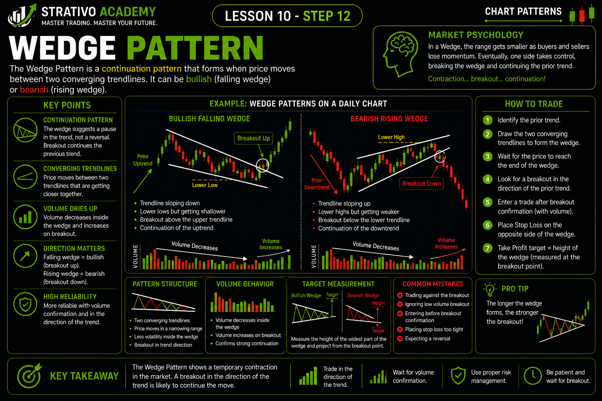
📐 Wedge Pattern
The Wedge Pattern is a popular chart pattern that forms when price moves between two trendlines that gradually come closer together. Unlike triangles, both trendlines slope in the same direction. Wedges can signal either a continuation of the current trend or a possible trend reversal, depending on where they appear and how the breakout occurs.
There are two main types of wedge patterns: Rising Wedge and Falling Wedge. Learning to distinguish between them helps traders understand changing market momentum and prepare for potential breakout opportunities.
📈 Rising Wedge
A Rising Wedge forms when both support and resistance trendlines slope upward, but the support line rises faster than the resistance line. This causes the trading range to become narrower as price continues climbing.
Although price is still moving upward, each new rally becomes weaker. Buyers are losing momentum, while sellers gradually gain confidence. When price breaks below the lower trendline, it often signals a bearish move.
📉 Falling Wedge
A Falling Wedge forms when both support and resistance trendlines slope downward, but the resistance line falls faster than the support line. As the pattern narrows, selling pressure begins to weaken.
Sellers continue pushing price lower, but each new decline becomes smaller. Buyers slowly gain strength, and a breakout above the upper trendline often signals a bullish move.
🧠 Market Psychology
Wedge patterns represent slowing momentum. Even though price continues moving in the current direction, each move becomes weaker than the previous one. This tells traders that the dominant side of the market may be losing control.
- 📈 Rising Wedge → Buying pressure gradually weakens.
- 📉 Falling Wedge → Selling pressure gradually weakens.
- ⚖️ Momentum decreases as price approaches the end of the wedge.
- 🚀 A breakout confirms which side has taken control.
📊 How to Trade a Wedge Pattern
- Identify whether the pattern is a Rising Wedge or Falling Wedge.
- Draw both converging trendlines accurately.
- Wait for a strong breakout candle outside the wedge.
- Many traders wait for a retest of the broken trendline before entering.
- Place Stop Loss outside the opposite side of the wedge.
- Take Profit can be placed at the next support or resistance level, or by measuring the height of the wedge.
⚠️ Common Beginner Mistakes
- ❌ Confusing wedges with triangles.
- ❌ Trading before the breakout is confirmed.
- ❌ Drawing trendlines through random candles.
- ❌ Ignoring the overall market trend.
- ❌ Trading without proper risk management.
💡 Strativo Tip
Wedge patterns become much more reliable when they form near important support or resistance levels. Always wait for a confirmed breakout instead of predicting the direction. Combining wedge patterns with market structure, trend analysis, and risk management can significantly improve trading decisions.
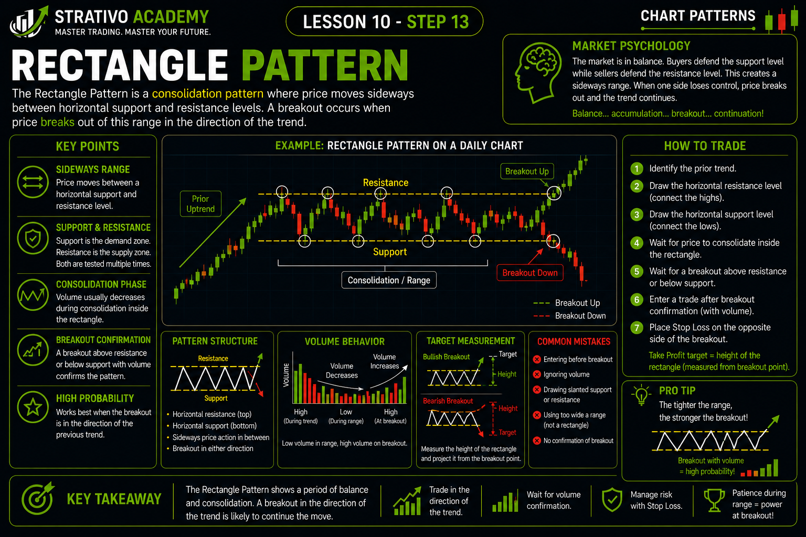
⬛ Rectangle Pattern
The Rectangle Pattern is a chart formation that occurs when price moves sideways between a horizontal resistance level and a horizontal support level. During this period, neither buyers nor sellers have enough strength to take complete control of the market. As a result, price continues bouncing between these two levels until a breakout finally occurs.
This pattern is also known as a Trading Range or Consolidation Zone. It represents a temporary pause in the market where traders wait for new information before deciding the next direction. Once price breaks above resistance or below support, a strong move often follows.
🔍 How to Identify a Rectangle Pattern
- ✅ Price moves sideways instead of trending.
- ✅ A clear horizontal resistance level forms at the top.
- ✅ A clear horizontal support level forms at the bottom.
- ✅ Price touches both support and resistance multiple times.
- ✅ Wait for a confirmed breakout before entering a trade.
🧠 Market Psychology
During a Rectangle Pattern, buyers and sellers are evenly matched. Buyers prevent price from falling below support, while sellers stop price from rising above resistance.
As this battle continues, the market stores energy. Eventually, one side gains enough strength to break out of the range. A breakout above resistance shows buyers have taken control, while a breakout below support shows sellers are now in control.
📏 Important Parts of the Pattern
- ⬆️ Horizontal Resistance
- ⬇️ Horizontal Support
- ↔️ Sideways Price Movement
- 📍 Multiple Touches of Support and Resistance
- 🚀 Breakout Above Resistance or Breakdown Below Support
📊 How to Trade a Rectangle Pattern
- Wait for the rectangle to fully develop.
- Draw horizontal support and resistance lines.
- Do not trade while price is moving randomly inside the range unless your strategy is specifically designed for range trading.
- Wait for a strong candle to close above resistance for a buy trade or below support for a sell trade.
- Many professional traders wait for a retest of the broken level before entering.
- Place the Stop Loss on the opposite side of the breakout level.
- Take Profit can be set near the next support or resistance level or by measuring the height of the rectangle and projecting it from the breakout point.
⚠️ Common Beginner Mistakes
- ❌ Entering trades before the breakout is confirmed.
- ❌ Mistaking random market movement for a rectangle.
- ❌ Ignoring false breakouts.
- ❌ Forgetting to use Stop Loss.
- ❌ Ignoring the overall market trend.
💡 Strativo Tip
Rectangle patterns become much more reliable when they appear after a strong trend and are confirmed by a decisive breakout with strong momentum. Avoid chasing price inside the range. Instead, wait patiently for confirmation and always combine the pattern with support and resistance, trend analysis, and proper risk management before entering a trade.
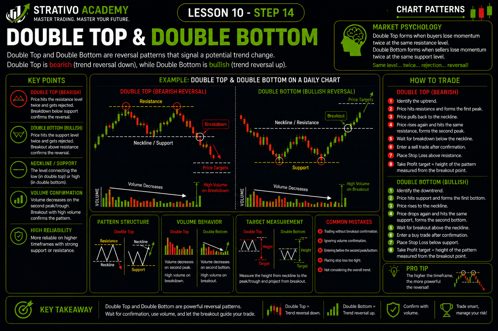
💹 How to Trade Chart Patterns
Learning to identify chart patterns is only half of the journey. Successful traders know that finding a pattern is not enough—they must also know when to enter, where to place a Stop Loss, where to take profit, and how to manage risk. A well-planned trade is always better than a rushed trade based on emotions.
Every chart pattern follows the same basic trading process. Whether you are trading a Double Top, Triangle, Wedge, or Rectangle, the goal is to wait for confirmation before risking your money.
📝 Step 1: Identify a Valid Pattern
Before taking any trade, make sure the pattern is complete. Draw your trendlines carefully and confirm that the structure matches the rules you learned in this lesson.
- ✅ Look for clear and clean price action.
- ✅ Make sure the pattern is easy to recognize.
- ✅ Avoid forcing patterns where they don't exist.
📊 Step 2: Wait for Confirmation
Never enter a trade simply because a pattern appears on the chart. The safest approach is to wait until price confirms the breakout or breakdown.
- ✅ Strong candle closes outside the pattern.
- ✅ Breakout above resistance or below support.
- ✅ Optional retest of the breakout level.
- ✅ Momentum supports the breakout.
🎯 Step 3: Plan Your Entry
Once confirmation is received, decide exactly where you want to enter the trade. Many traders enter immediately after the breakout, while others wait for a retest to reduce risk.
Whatever method you choose, always have a clear plan before entering the market.
🛡️ Step 4: Place Your Stop Loss
Every trade should have a Stop Loss. It protects your trading account if the market moves against you.
- ✅ Place it beyond the invalidation point.
- ✅ Avoid placing it too close to the entry.
- ✅ Never move your Stop Loss farther away just to avoid taking a loss.
💰 Step 5: Set Your Take Profit
Before entering the trade, decide where you will take profits. Common methods include:
- 📍 Next Support or Resistance Level
- 📏 Measured Move (Pattern Height)
- ⚖️ Fixed Risk-to-Reward Ratio
📈 Step 6: Manage the Trade
Entering the trade is only the beginning. Professional traders continue monitoring the position until it is closed.
- ✅ Follow your trading plan.
- ✅ Don't panic because of small pullbacks.
- ✅ Avoid emotional decisions.
- ✅ Accept both wins and losses as part of trading.
⚠️ Never Do These Things
- ❌ Enter before confirmation.
- ❌ Risk your entire account on one trade.
- ❌ Remove your Stop Loss.
- ❌ Chase the market after a breakout.
- ❌ Trade based on emotions instead of your plan.
💡 Strativo Tip
The best traders are not the ones who trade the most—they are the ones who wait patiently for the highest-quality setups. Always remember: patience, confirmation, and proper risk management are far more important than trying to catch every market move.
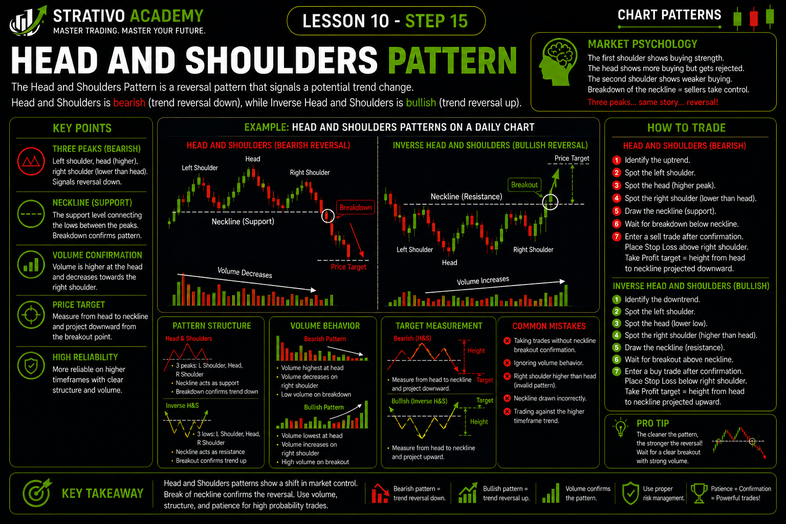
📋 Common Chart Pattern Trading Guide
By now, you've learned several important chart patterns and how they work. However, identifying a pattern is only the first step. Before placing any trade, you should always follow a simple checklist to make sure the setup is valid. Professional traders use checklists to reduce emotional decisions and improve consistency.
Think of this guide as your trading routine. Every time you see a chart pattern, go through these steps before clicking the Buy or Sell button. If one or more important conditions are missing, it's often better to wait for another opportunity.
✅ Pre-Trade Checklist
- ✅ Is the chart pattern complete?
- ✅ Is the overall trend clear?
- ✅ Have you drawn support and resistance correctly?
- ✅ Has the breakout or breakdown been confirmed?
- ✅ Is there enough room for price to reach your target?
- ✅ Have you planned your Stop Loss?
- ✅ Have you planned your Take Profit?
- ✅ Are you risking only a small portion of your account?
📊 Best Trading Practices
- 📈 Trade with the overall market trend whenever possible.
- 🕒 Wait patiently for the pattern to complete.
- ✔️ Wait for breakout confirmation before entering.
- 📍 Use support and resistance to improve accuracy.
- 🛡️ Always protect your account with a Stop Loss.
- 💰 Decide your Take Profit before entering the trade.
- 📖 Keep a trading journal to review your trades and improve over time.
🚫 When You Should Avoid Trading
- ❌ The pattern is incomplete.
- ❌ The breakout has not been confirmed.
- ❌ The market is moving randomly with no clear direction.
- ❌ Risk is much larger than the potential reward.
- ❌ You are trading because of fear, greed, or frustration.
- ❌ Important economic news is about to be released and your strategy doesn't account for it.
🎯 Professional Trading Routine
- Analyze the overall market trend.
- Identify a valid chart pattern.
- Draw support, resistance, and trendlines.
- Wait for breakout confirmation.
- Calculate your Stop Loss and Take Profit.
- Check your risk before entering.
- Enter the trade only if all conditions are met.
- Stay disciplined and follow your trading plan.
⚠️ Important Reminder
💡 Strativo Tip
There is no chart pattern that wins 100% of the time. Even the best traders experience losing trades. Your goal is not to win every trade—it is to follow your trading plan consistently and protect your capital over the long term.
💡 Strativo Tip
Success in trading comes from discipline, patience, and consistency—not from finding a "magic" pattern. Focus on taking high-quality trades, managing risk carefully, and learning from every trade you take. Over time, these habits can make a much bigger difference than any single chart pattern.